CSS3 In Depth
Other Selectors
- Descendant Selector
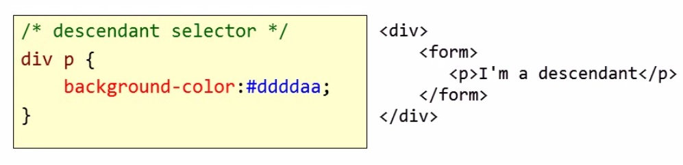
- Child Selector
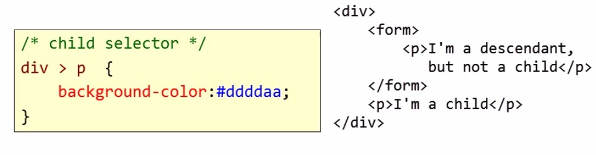
- Attribute Selector

In questo esempio tutte le immagini che hanno l`attributo specificato (cerchiato in rosso) ricevono un padding pari a zero.
- Pseudo Class
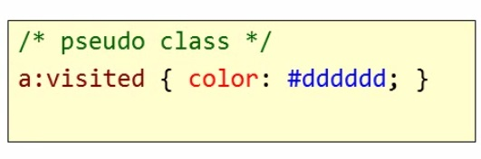
In questo esempio tutti gli anchor già visitati ricevono il colore grigio chiaro.
- Star Selector
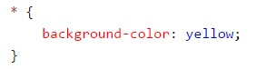
Seleziona tutti gli elementi della pagina e gli applica un attributo specifico. Nell`esempio di cui sopra applica a tutti gli elementi un colore di background giallo.
Styles From Different Sources

Come si vede dallo schema di cui sopra, vi sono tre fonti principali di stile: quella relativa al foglio/i compilato/i dall`autore, quella relativa al foglio di default del browser e quella relativa al foglio dell`utente. Se una stessa istruzione è presente in due o più fogli, la precedenza sarà allora la seguente:
- Author Stylesheets
- User Stylesheet
- Default Stylesheet
Se si vuole dare la precedenza ad un`istruzione che invece, per i motivi di cui sopra, viene esclusa, bisognerà allora utilizzare "!important" come nell`esempio di cui sotto.
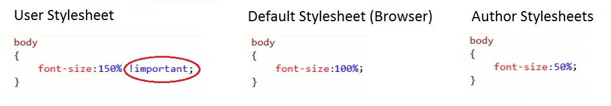
Ordering Rules
Se si hanno due o più fogli di stile, e qusti presentano un attributo diverso per lo stesso tag, allora il browser visualizzerà l'attributo del foglio di stile linkato per ultimo nella pagina HTML. Se invece, nello stesso foglio di stile sono presenti due o più diversi attributi per lo stesso tag, allora il browser visualizzerà l'ultimo attributo dall'alto verso il basso.
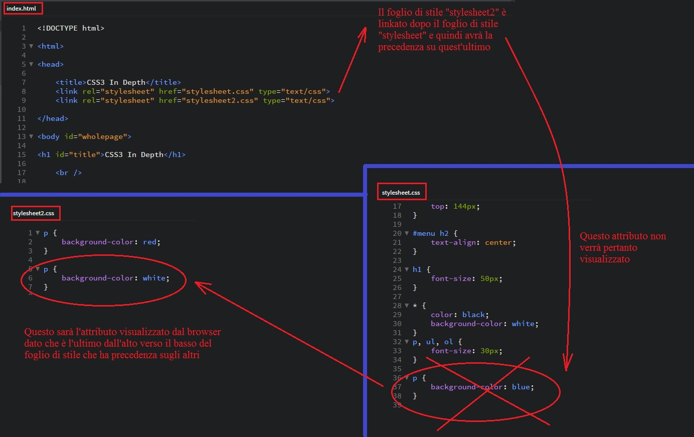
E' possibile importare un foglio di stile in un altro utilizzando "@import url("NOMEDELFILE.css");" (questa istruzione deve trovarsi sempre all'inizio di un foglio di stile). Tutti gli attributi del foglio di stile che "ospita" avranno precedenza su quelli del foglio di stile che viene importato.
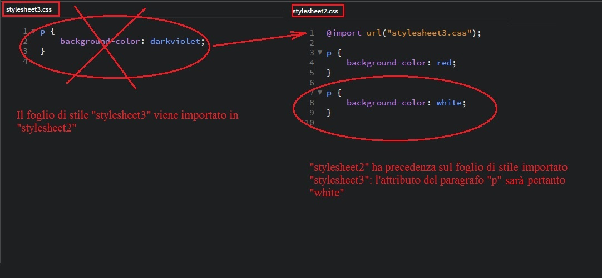
Specificity
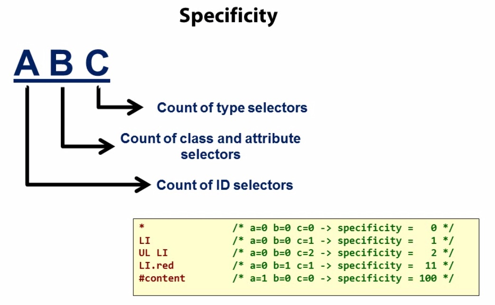
Sotto un esempio relativo ad un "div":
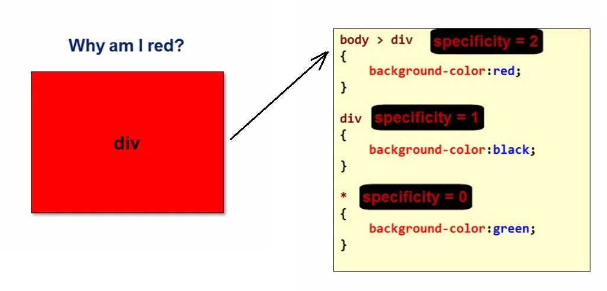
Border, Margin And Padding
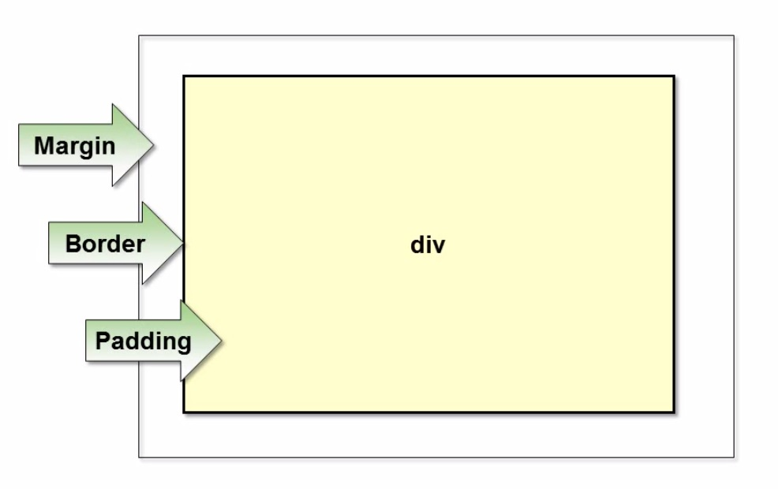
- Border: the border of a box (we can control its width, style and colour)
- Margin: the space between a box and any adjacent elements
- Padding: adds space between the content of a box and the border of the same box
Display And Visibility
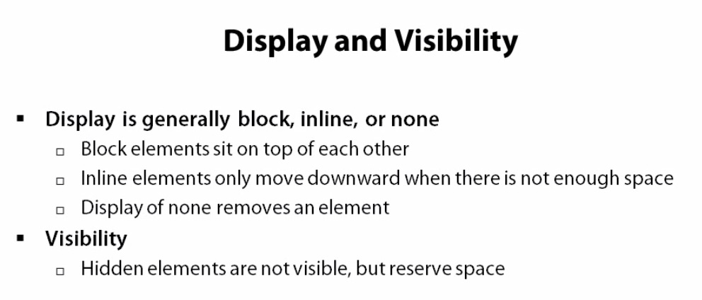
Nell´esempio di sotto abbiamo un "ul" costituita da sei elementi. L´elemento tre è impostato su "display: none;", quindi non verrà visualizzato e non occuperà più spazio alcuno. L´elemento cinque è impostato invece su "visibility: hidden;", quindi non verrà visualizzato ma continuerà ad ogni modo ad occupare spazio. Si veda il file "stylesheet.css" per ulteriori chiarimenti.
- Elemento 1
- Elemento 2
- Elemento 3
- Elemento 4
- Elemento 5
- Elemento 6
Nell´esempio di sotto abbiamo un "ul" costituita da dieci elementi ed ogni elemento è impostato su "display: inline;". Il risultato è che gli elementi non saranno più uno sopra l´altro come nel caso di "display: block;", che è l´impostazione di default del browser. Il problema è che, così facendo, non vengono più rispettate la "width", la "height" ed i margini dei singoli "blocchi" (in questo caso pari rispettivamente a "180 px", "40 px" ed a "5 px").
- Elemento 1
- Elemento 2
- Elemento 3
- Elemento 4
- Elemento 5
- Elemento 6
- Elemento 7
- Elemento 8
- Elemento 9
- Elemento 10
Per ovviare a questo problema basterà impostare gli elementi su "display: inline-block;" come nell´esempio di sotto. Si veda il file "stylesheet.css" per ulteriori chiarimenti.
- Elemento 1
- Elemento 2
- Elemento 3
- Elemento 4
- Elemento 5
- Elemento 6
- Elemento 7
- Elemento 8
- Elemento 9
- Elemento 10
Styling Text
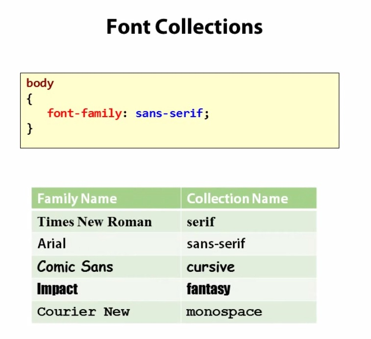
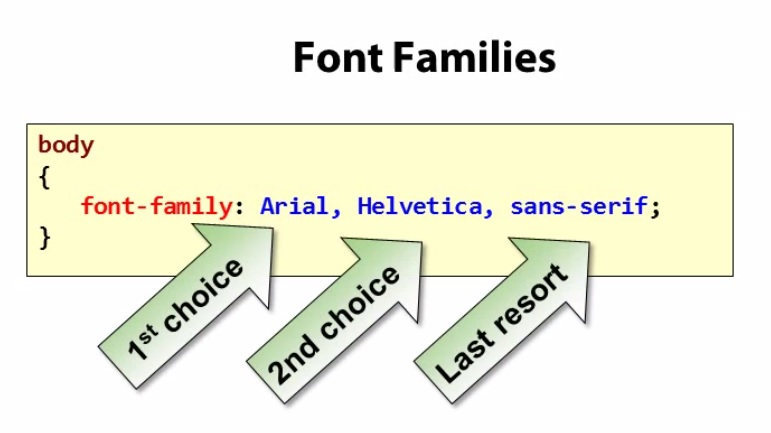
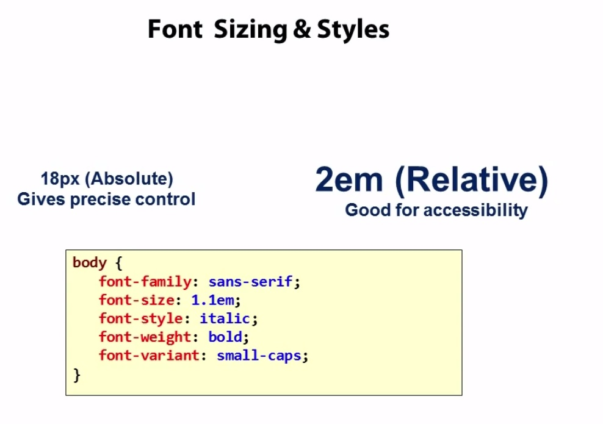
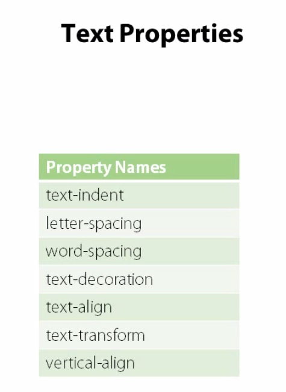
Qui sotto un esempio di styling di un testo. Si veda il file "stylesheet.css" per ulteriori chiarimenti.
CSS Hover Selector
The :hover selector belongs to pseudo-classes. A pseudo-class is used to define a special state of an element.
For example, it can be used to:
- Style an element when a user mouses over it
- Style visited and unvisited links differently
- Style an element when it gets focus
The :hover selector is used to select elements when you mouse over them. Here is an example:
a:hover {
background-color: yellow;
}
In the example above the background-color of the anchor tag becomes yellow when you mouse over it.
Tips:
- The :hover selector can be used on all elements, not only on links
- Use the :link selector to style links to unvisited pages, the :visited selector to style links to visited pages, and the :active selector to style the active link
- :hover MUST come after :link and :visited (if they are present) in the CSS definition, in order to be effective
Layout With CSS
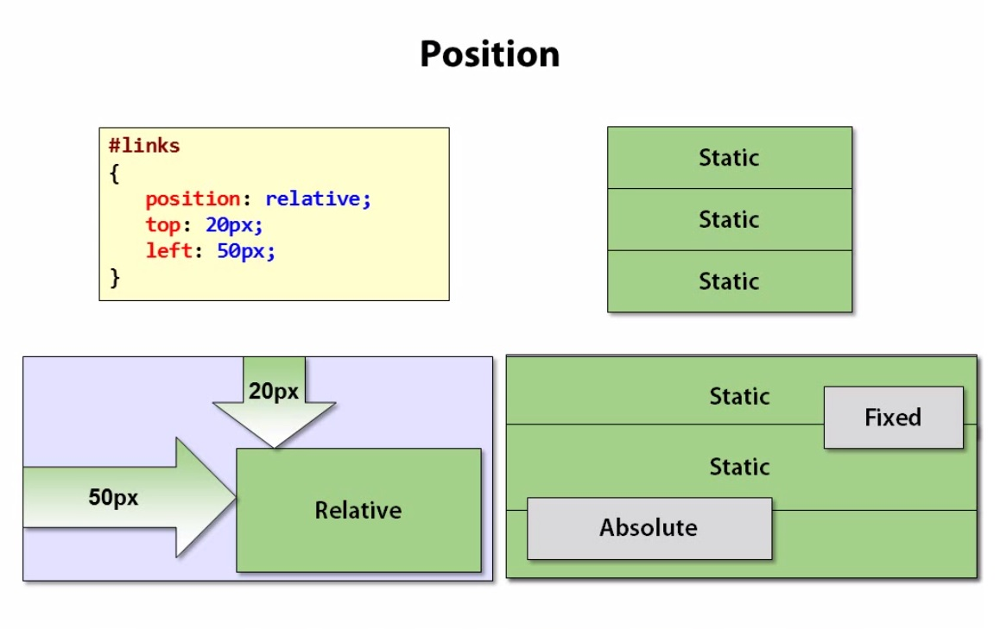
Each "paragraph" or "div" we create will appear underneath the previous "div" or "paragraph". That´s what we call the flow of a document: elements just flow downward. We have to keep in mind the difference between inline elements and block elements:
- Inline Elements: they appear in a line, they don´t create a new line ("span", "a", "img", etc)
- Block Elements: they create a new line in the flow of the document ("div", "p", "h1", "h2", etc)
Static positioning, the default value, stacks elements down the page according to the document flow (we are talking about block elements!).
Relative positioning moves an element from its default position in some direction (in the example above we use "top" and "left" but we could also use "bottom" and "right").
"Absolute" and "fixed" are two values that remove an element from the document flow. Absolute positioning moves an element to a specific position relative to the "body" of a document (for example 20 pixels from the top and 35 pixels from the left). Fixed positioning is very similar, except the positioning is relative to the window itself. This means that the element is going to stay at that specific position (for example 30 pixels from the top and 20 pixels from the right) even if the user scrolls the window down or up.
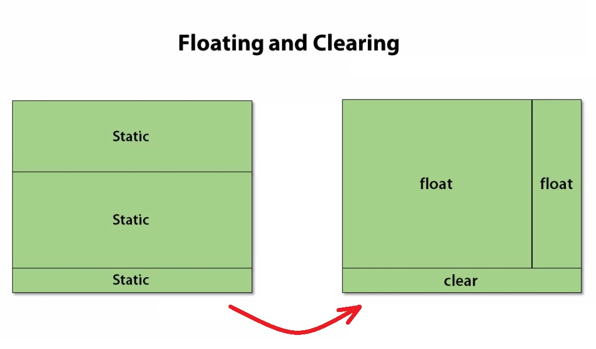
"Float" serve per spostare un elemento a destra o a sinistra di un altro. Il document flow continuerà normalmente e questo potrebbe generare dei problemi di layout come quello di cui sotto.
Arthur Conan Doyle wurde am 22. Mai 1859 im schottischen Edinburgh geboren. Doyles Mutter hieß Mary, geb. Foley, und war Irin. Doyles Vater Charles Altamont Doyle, ein englischer irischstämmiger Beamter aus aristokratischem Hause, ließ ihn Medizin an der Universität von Edinburgh studieren. Dort lernte er auch bei dem berühmten schottischen Chirurgen Joseph Bell, dessen Assistent er im Jahre 1878 wurde. Er besuchte außerdem die Jesuitenschulen Stonyhurst, Stonyhurst College und Stella Matutina in Feldkirch (Vorarlberg).
1880 reiste Doyle als Schiffsarzt auf dem Walfänger Hope in die Arktis, ein Jahr später auf der Mayumba nach Westafrika. Von 1882 bis 1890 führte er eine Arztpraxis in Southsea bei Portsmouth, verfasste in seiner Freizeit aber auch schon erste literarische Werke. 1883, mit nur 23 Jahren, verfasste er in Portsmouth seinen ersten Roman, The Narrative of John Smith (s.u.), der jedoch unvollendet und unveröffentlicht blieb und erst 2011 publiziert wurde. 1887, mit 28 Jahren, veröffentlichte er die erste Geschichte des Detektivs Sherlock Holmes und seines Freundes Dr. Watson: A Study in Scarlet (dt. Eine Studie in Scharlachrot).
Die deduktive und kriminalanalytische Methode ist bezeichnend für die Figuren Doyles. Er, selbst Arzt, dachte sich die Rolle des Dr. Watson zu. Sherlock Holmes stattete er mit Eigenschaften seines Lehrers an der Edinburgher Universität, Joseph Bell, aus. Die von Doyle in seinen Romanen beschriebenen Methoden der Kriminalistik, beispielsweise die Daktyloskopie, waren den Polizeimethoden ihrer Zeit voraus. Dies gilt insbesondere für die grundsätzlich wissenschaftlich orientierte Methodik bei der Verbrechensuntersuchung.
1890 ging Doyle nach London. Ab 1891 konnte er seinen Lebensunterhalt durch die Schriftstellerei bestreiten, nachdem im selben Jahr die erste Detektiverzählung A Scandal in Bohemia (dt. Ein Skandal in Böhmen) im The Strand-Magazin erschienen war.
1893 entschied Conan Doyle, das Leben seines Protagonisten Holmes zu beenden, da das regelmäßige Verfassen neuer Holmes-Geschichten zu viel seiner Zeit in Anspruch nahm und er seine schriftstellerische Arbeit auf andere Werke konzentrieren wollte. Die Mutter des Schriftstellers, eine begeisterte Leserin der Geschichten, versuchte vergeblich, ihren Sohn von dem Vorhaben abzubringen. In der Erzählung The Final Problem (dt. Das letzte Problem) stürzt Sherlock im Kampf mit seinem Widersacher Professor Moriarty die Reichenbachfälle bei Meiringen in der Schweiz hinab und wird von Watson für tot erklärt.
Im selben Jahr wurde Doyle Meister in der Freimaurerloge „Phoenix No. 257“ in Portsmouth.
Im Winter 1894 überquerte er in einem gewagten Unternehmen auf Skiern die Maienfelder Furgga von Davos nach Arosa, wobei er von zwei Einheimischen begleitet wurde. Das Ereignis wurde gut 100 Jahre später vom ORF in einem Fernsehfilm nachgestellt.
Mit historischen Romanen wie Rodney Stone. Sir Nigel und The White Company hatte Doyle weniger Erfolg, er selbst hielt sie für seine besten Arbeiten. Aus dieser Zeit stammen auch mystische Novellen wie The Parasite (1894) und Mystery of the Cloomber (1895).
Im Jahre 1896 ging Doyle nach Südafrika, um im Zweiten Burenkrieg ärztlichen Dienst zu tun. Für seine Propagandatätigkeit in seinem 1900 veröffentlichten Buch The Great Boer War (dt. Der große Burenkrieg) erhielt er 1902 seinen Ehrentitel Sir Arthur Conan Doyle.
Um 1900 erkrankte Doyle an Typhus und machte eine Reise nach Norfolk. Dort lernte er Fletcher Robinson kennen, der aus Devonshire kam und im Dartmoor aufgewachsen war. Fletcher erzählte Doyle alte Legenden über seine Heimat, darunter einige Gruselgeschichten um einen Geisterhund. Diese inspirierten Doyle, einen Roman zu schreiben, in dem ein Geisterhund eine Familie bedroht. Doyle reiste ins Dartmoor, um ein wenig der realen Atmosphäre mit in das Buch aufnehmen zu können. Dort wurde ihm klar, dass er einen Helden in der Form eines Detektivs brauchte, der die mysteriösen Vorgänge untersuchte. Er entschloss sich, auf seine Figur Sherlock Holmes zurückzugreifen, obwohl er die Reihe 1893 für beendet erklärt hatte. Der Roman sollte demzufolge vor Holmes' Tod in der letzten Kurzgeschichte spielen.
Der große Erfolg des 1903 erschienenen Romans The Hound of the Baskervilles (dt. oft Der Hund von Baskerville, eigentl. Der Hund der Baskervilles) veranlasste Doyle, Sherlock Holmes’ Tod in der auf den Roman folgenden Kurzgeschichte The Empty House (dt. Das leere Haus) von 1905 literarisch zu revidieren.
Ab 1906 setzte er sich in mehreren Zeitungsartikeln für George Edalji ein, der zu Unrecht wegen Verstümmelung mehrerer Tiere verurteilt worden war.
Doyle hatte die Bekanntschaft des britisch-irischen Diplomaten Roger Casement gemacht, dessen Bericht über die katastrophalen Zustände im Kongofreistaat des belgischen Königs Leopold II. 1904 publiziert worden war. Nachdem sich die Zustände trotz Übergabe der königlichen Privatkolonie an den belgischen Staat nicht verbessert hatten, verfasste Doyle eine viel beachtete Streitschrift über "Das Congoverbrechen", in der er den König als Hauptverantwortlichen bezeichnete.
In der folgenden Zeit erschuf Conan Doyle seine zweite sehr populäre Figur, Professor Challenger. Die vergessene Welt, in der sie zum ersten Mal auftaucht, wurde 1912 publiziert und wird als sein bekanntester Roman neben der Sherlock-Holmes-Reihe angesehen.
Doyles während des Ersten Weltkriegs veröffentlichte Texte setzen sich teilweise kritisch mit dem Deutschland der damaligen Zeit auseinander. In diesem Krieg fiel auch sein Sohn Kingsley.
Doyle begann sich verstärkt Zukunftsromanen in der Tradition von Jules Verne sowie dem Spiritismus und Mystizismus zu widmen und unternahm dazu auch Vortragsreisen.
Unter anderem machte er die sogenannten Feen von Cottingley bekannt, gefälschte Fotos von Feen, an deren Echtheit er fest glaubte, filmisch umgesetzt 1997 in Der Elfengarten. Für Schlagzeilen sorgte seine öffentliche Kontroverse mit dem Zauberkünstler Harry Houdini. Die Freundschaft zwischen Doyle und Houdini zerbrach an zu unterschiedlichen Vorstellungen über den Spiritismus – Doyle akzeptierte diverse Medien als echt und glaubte sogar, Houdini selbst habe übernatürliche Fähigkeiten, während Houdini nach eigener Aussage zeitlebens keine Séance erlebte, deren Effekte er nicht mit Zaubertricks hätte nachmachen können.
1927 erschien der letzte Sammelband mit Erzählungen vor Doyles Tod – The Casebook Of Sherlock Holmes (dt. Sherlock Holmes’ Buch der Fälle).
Am 7. Juli 1930 starb Doyle infolge eines Herzinfarkts in Windlesham, seinem Anwesen im Gebiet der Ortschaft Crowborough, Sussex. Er war zweimal verheiratet, von 1885 bis zu ihrem Tod 1906 mit Louisa (Louise) „Touie“ Hawkins und von 1907 bis zu seinem Tod mit Jean Leckie. Aus seiner ersten Ehe stammten seine Kinder Kingsley und Mary, aus seiner zweiten die Söhne Denis, Adrian und Tochter Jean, genannt „Billie“. Doyle wurde auf dem All Saints Churchyard der All Saints Church des kleinen Ortes Minstead unter einer alten Eiche beerdigt, sein Grab ist bis heute dort erhalten geblieben. Neben ihm wurde 1940 seine Frau Jean beigesetzt.
Per ovviare a questo problema si usa generalmente "clear", che pulisce lettaralmente gli spazi attorno ad un elemento ("left", "right" o "both", a seconda delle esigenze). Vedi l´esempio di sotto ed il file "stylesheet.css".
Arthur Conan Doyle wurde am 22. Mai 1859 im schottischen Edinburgh geboren. Doyles Mutter hieß Mary, geb. Foley, und war Irin. Doyles Vater Charles Altamont Doyle, ein englischer irischstämmiger Beamter aus aristokratischem Hause, ließ ihn Medizin an der Universität von Edinburgh studieren. Dort lernte er auch bei dem berühmten schottischen Chirurgen Joseph Bell, dessen Assistent er im Jahre 1878 wurde. Er besuchte außerdem die Jesuitenschulen Stonyhurst, Stonyhurst College und Stella Matutina in Feldkirch (Vorarlberg).
1880 reiste Doyle als Schiffsarzt auf dem Walfänger Hope in die Arktis, ein Jahr später auf der Mayumba nach Westafrika. Von 1882 bis 1890 führte er eine Arztpraxis in Southsea bei Portsmouth, verfasste in seiner Freizeit aber auch schon erste literarische Werke. 1883, mit nur 23 Jahren, verfasste er in Portsmouth seinen ersten Roman, The Narrative of John Smith (s.u.), der jedoch unvollendet und unveröffentlicht blieb und erst 2011 publiziert wurde. 1887, mit 28 Jahren, veröffentlichte er die erste Geschichte des Detektivs Sherlock Holmes und seines Freundes Dr. Watson: A Study in Scarlet (dt. Eine Studie in Scharlachrot).
Die deduktive und kriminalanalytische Methode ist bezeichnend für die Figuren Doyles. Er, selbst Arzt, dachte sich die Rolle des Dr. Watson zu. Sherlock Holmes stattete er mit Eigenschaften seines Lehrers an der Edinburgher Universität, Joseph Bell, aus. Die von Doyle in seinen Romanen beschriebenen Methoden der Kriminalistik, beispielsweise die Daktyloskopie, waren den Polizeimethoden ihrer Zeit voraus. Dies gilt insbesondere für die grundsätzlich wissenschaftlich orientierte Methodik bei der Verbrechensuntersuchung.
1890 ging Doyle nach London. Ab 1891 konnte er seinen Lebensunterhalt durch die Schriftstellerei bestreiten, nachdem im selben Jahr die erste Detektiverzählung A Scandal in Bohemia (dt. Ein Skandal in Böhmen) im The Strand-Magazin erschienen war.
1893 entschied Conan Doyle, das Leben seines Protagonisten Holmes zu beenden, da das regelmäßige Verfassen neuer Holmes-Geschichten zu viel seiner Zeit in Anspruch nahm und er seine schriftstellerische Arbeit auf andere Werke konzentrieren wollte. Die Mutter des Schriftstellers, eine begeisterte Leserin der Geschichten, versuchte vergeblich, ihren Sohn von dem Vorhaben abzubringen. In der Erzählung The Final Problem (dt. Das letzte Problem) stürzt Sherlock im Kampf mit seinem Widersacher Professor Moriarty die Reichenbachfälle bei Meiringen in der Schweiz hinab und wird von Watson für tot erklärt.
Im selben Jahr wurde Doyle Meister in der Freimaurerloge „Phoenix No. 257“ in Portsmouth.
Im Winter 1894 überquerte er in einem gewagten Unternehmen auf Skiern die Maienfelder Furgga von Davos nach Arosa, wobei er von zwei Einheimischen begleitet wurde. Das Ereignis wurde gut 100 Jahre später vom ORF in einem Fernsehfilm nachgestellt.
Mit historischen Romanen wie Rodney Stone. Sir Nigel und The White Company hatte Doyle weniger Erfolg, er selbst hielt sie für seine besten Arbeiten. Aus dieser Zeit stammen auch mystische Novellen wie The Parasite (1894) und Mystery of the Cloomber (1895).
Im Jahre 1896 ging Doyle nach Südafrika, um im Zweiten Burenkrieg ärztlichen Dienst zu tun. Für seine Propagandatätigkeit in seinem 1900 veröffentlichten Buch The Great Boer War (dt. Der große Burenkrieg) erhielt er 1902 seinen Ehrentitel Sir Arthur Conan Doyle.
Um 1900 erkrankte Doyle an Typhus und machte eine Reise nach Norfolk. Dort lernte er Fletcher Robinson kennen, der aus Devonshire kam und im Dartmoor aufgewachsen war. Fletcher erzählte Doyle alte Legenden über seine Heimat, darunter einige Gruselgeschichten um einen Geisterhund. Diese inspirierten Doyle, einen Roman zu schreiben, in dem ein Geisterhund eine Familie bedroht. Doyle reiste ins Dartmoor, um ein wenig der realen Atmosphäre mit in das Buch aufnehmen zu können. Dort wurde ihm klar, dass er einen Helden in der Form eines Detektivs brauchte, der die mysteriösen Vorgänge untersuchte. Er entschloss sich, auf seine Figur Sherlock Holmes zurückzugreifen, obwohl er die Reihe 1893 für beendet erklärt hatte. Der Roman sollte demzufolge vor Holmes' Tod in der letzten Kurzgeschichte spielen.
Der große Erfolg des 1903 erschienenen Romans The Hound of the Baskervilles (dt. oft Der Hund von Baskerville, eigentl. Der Hund der Baskervilles) veranlasste Doyle, Sherlock Holmes’ Tod in der auf den Roman folgenden Kurzgeschichte The Empty House (dt. Das leere Haus) von 1905 literarisch zu revidieren.
Ab 1906 setzte er sich in mehreren Zeitungsartikeln für George Edalji ein, der zu Unrecht wegen Verstümmelung mehrerer Tiere verurteilt worden war.
Doyle hatte die Bekanntschaft des britisch-irischen Diplomaten Roger Casement gemacht, dessen Bericht über die katastrophalen Zustände im Kongofreistaat des belgischen Königs Leopold II. 1904 publiziert worden war. Nachdem sich die Zustände trotz Übergabe der königlichen Privatkolonie an den belgischen Staat nicht verbessert hatten, verfasste Doyle eine viel beachtete Streitschrift über "Das Congoverbrechen", in der er den König als Hauptverantwortlichen bezeichnete.
In der folgenden Zeit erschuf Conan Doyle seine zweite sehr populäre Figur, Professor Challenger. Die vergessene Welt, in der sie zum ersten Mal auftaucht, wurde 1912 publiziert und wird als sein bekanntester Roman neben der Sherlock-Holmes-Reihe angesehen.
Doyles während des Ersten Weltkriegs veröffentlichte Texte setzen sich teilweise kritisch mit dem Deutschland der damaligen Zeit auseinander. In diesem Krieg fiel auch sein Sohn Kingsley.
Doyle begann sich verstärkt Zukunftsromanen in der Tradition von Jules Verne sowie dem Spiritismus und Mystizismus zu widmen und unternahm dazu auch Vortragsreisen.
Unter anderem machte er die sogenannten Feen von Cottingley bekannt, gefälschte Fotos von Feen, an deren Echtheit er fest glaubte, filmisch umgesetzt 1997 in Der Elfengarten. Für Schlagzeilen sorgte seine öffentliche Kontroverse mit dem Zauberkünstler Harry Houdini. Die Freundschaft zwischen Doyle und Houdini zerbrach an zu unterschiedlichen Vorstellungen über den Spiritismus – Doyle akzeptierte diverse Medien als echt und glaubte sogar, Houdini selbst habe übernatürliche Fähigkeiten, während Houdini nach eigener Aussage zeitlebens keine Séance erlebte, deren Effekte er nicht mit Zaubertricks hätte nachmachen können.
1927 erschien der letzte Sammelband mit Erzählungen vor Doyles Tod – The Casebook Of Sherlock Holmes (dt. Sherlock Holmes’ Buch der Fälle).
Am 7. Juli 1930 starb Doyle infolge eines Herzinfarkts in Windlesham, seinem Anwesen im Gebiet der Ortschaft Crowborough, Sussex. Er war zweimal verheiratet, von 1885 bis zu ihrem Tod 1906 mit Louisa (Louise) „Touie“ Hawkins und von 1907 bis zu seinem Tod mit Jean Leckie. Aus seiner ersten Ehe stammten seine Kinder Kingsley und Mary, aus seiner zweiten die Söhne Denis, Adrian und Tochter Jean, genannt „Billie“. Doyle wurde auf dem All Saints Churchyard der All Saints Church des kleinen Ortes Minstead unter einer alten Eiche beerdigt, sein Grab ist bis heute dort erhalten geblieben. Neben ihm wurde 1940 seine Frau Jean beigesetzt.
Qui sotto due esempi di layout molto popolari sul Web: